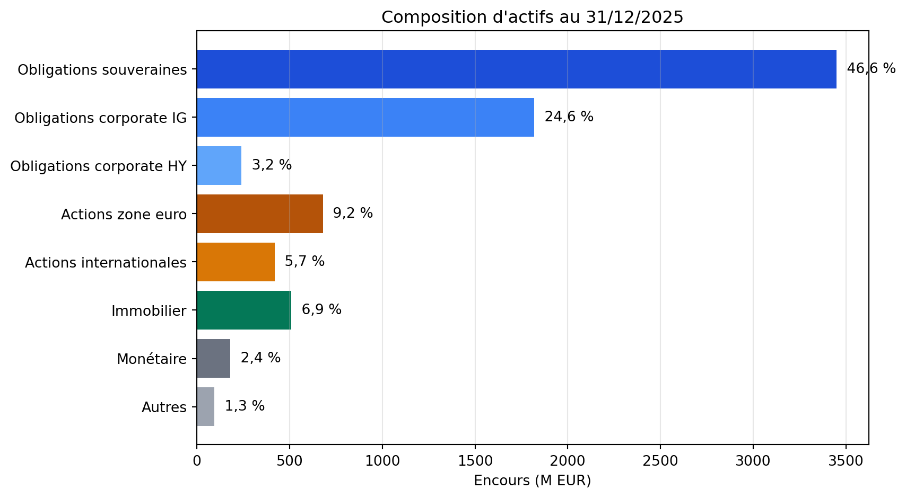
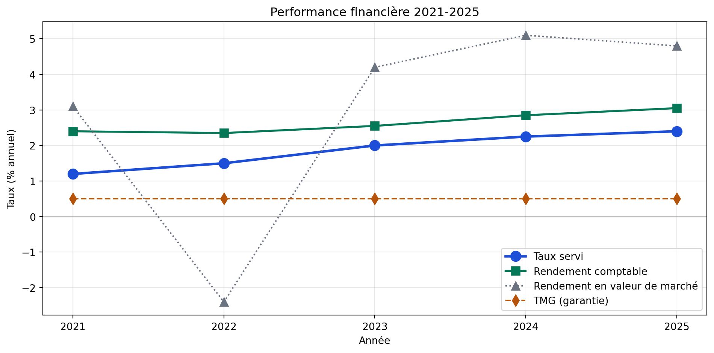
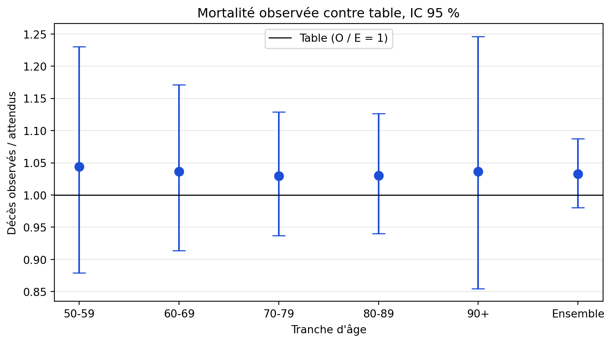

EXERCICE = 2025Cette fiche illustre la démarche D sur un rapport annuel Quarto. Ce que vous apprenez n’est pas la gestion de fonds vie, mais le pattern « source unique de chiffres, template paramétrable, régénération annuelle », applicable à tout livrable périodique, et la relecture des commentaires proposés par Claude contre les sorties.
La démarche se pratique en direct dans l’atelier de la demi-journée « Communication et tableaux de bord » du support.
Le rapport annuel d’un fonds vie épargne présente la composition du portefeuille, la performance, la sinistralité, les marges et les perspectives. Il est largement répétitif d’une année sur l’autre : structure identique, sources de données stables, gabarits de graphiques constants. Seuls les chiffres changent.
Pour l’actuaire qui le produit chaque année, l’enjeu est de rendre la production reproductible. La cible : un document Quarto qui se régénère à partir des données de l’arrêté, avec une intervention humaine sur les parties qualitatives (commentaires, perspectives) et une signature actuarielle qui valide l’ensemble. Le point faible du dispositif, ce sont les commentaires : Claude les rédige vite, et un commentaire peut citer des chiffres qui ne sont pas ceux du tableau juste au-dessus.
Ce cas illustre l’organisation des données (sources tracées, séparation données / template), l’optimisation du code (template Quarto et cellules paramétrées), l’interface de présentation (sections normalisées, graphiques cohérents), la gouvernance (versionnement Git par arrêté, traçabilité des chiffres), et le pilotage IA (5 prompts pour la structure, les graphiques et les commentaires).
On simule les données d’un fonds vie épargne en euros à l’arrêté du 31/12/2025 : composition d’actifs, performance, sinistralité, indicateurs. Toutes les valeurs sont fictives.
La première cellule porte l’étiquette parameters : avec le moteur Jupyter, c’est là que Quarto injecte les paramètres passés en ligne de commande (voir « Pour aller plus loin »).
EXERCICE = 2025import numpy as np
import pandas as pd
import matplotlib.pyplot as plt
from scipy import stats
ARRETE = f"{EXERCICE}-12-31"
DATE_ARRETE = f"31/12/{EXERCICE}"
def fr(x, d=1):
"""Nombre au format français, pour les textes du rapport."""
return f"{x:.{d}f}".replace(".", ",").replace("-", "−")
# 1. Composition d'actifs (en transparence)
composition_actifs = pd.DataFrame({
"classe": ["Obligations souveraines", "Obligations corporate IG",
"Obligations corporate HY", "Actions zone euro",
"Actions internationales", "Immobilier", "Monétaire", "Autres"],
"famille": ["Obligations", "Obligations", "Obligations", "Actions",
"Actions", "Immobilier", "Monétaire", "Autres"],
"encours_meur": [3450, 1820, 240, 680, 420, 510, 180, 95],
})
composition_actifs["part_pct"] = (composition_actifs["encours_meur"] /
composition_actifs["encours_meur"].sum() * 100).round(2)
# 2. Performance sur 5 ans
performance = pd.DataFrame({
"annee": [2021, 2022, 2023, 2024, 2025],
"taux_servi_pct": [1.20, 1.50, 2.00, 2.25, 2.40], # net de frais de gestion
"tmg_pct": [0.50, 0.50, 0.50, 0.50, 0.50], # taux minimum garanti
"rendement_comptable_pct": [2.40, 2.35, 2.55, 2.85, 3.05], # produits financiers / encours
"rendement_marche_pct": [3.10, -2.40, 4.20, 5.10, 4.80], # variation de valeur de marché incluse
})
performance["participation_au_dela_tmg_pts"] = performance["taux_servi_pct"] - performance["tmg_pct"]
performance["marge_financiere_pts"] = performance["rendement_comptable_pct"] - performance["taux_servi_pct"]
# 3. Indicateurs techniques
indicateurs = {
"encours_total_meur": composition_actifs["encours_meur"].sum(),
"nombre_contrats": 124_500,
"primes_collectees_meur": 380,
"prestations_servies_meur": 290,
"ratio_couverture_scr_organisme_pct": 184, # repris du SFCR de l'organisme
"duration_passif_annees": 12.3,
"duration_actif_annees": 7.8,
}
# 4. Mortalité observée contre table de référence
mortalite_observee = pd.DataFrame({
"tranche_age": ["50-59", "60-69", "70-79", "80-89", "90+"],
"n_assures": [28_400, 32_100, 21_500, 8_900, 1_200],
"deces_observes": [142, 257, 451, 481, 113],
"deces_attendus_table": [136, 248, 438, 467, 109],
})
print(f"Arrêté : {ARRETE}")
print(f"Encours total du fonds : {indicateurs['encours_total_meur']:,} M EUR")
print(f"Nombre de contrats : {indicateurs['nombre_contrats']:,}")
print(f"Taux servi {EXERCICE} : {performance.loc[performance['annee'] == EXERCICE, 'taux_servi_pct'].values[0]:.2f} %")
print(f"Ratio de couverture du SCR (organisme) : {indicateurs['ratio_couverture_scr_organisme_pct']} %")Arrêté : 2025-12-31
Encours total du fonds : 7,395 M EUR
Nombre de contrats : 124,500
Taux servi 2025 : 2.40 %
Ratio de couverture du SCR (organisme) : 184 %Le ratio de couverture du SCR se calcule pour l’organisme, pas pour un fonds : le rapport reprend celui du SFCR (rapport sur la solvabilité et la situation financière) publié par l’assureur. Le rapport annuel du fonds n’est pas non plus un dépôt réglementaire : l’ACPR reçoit le RSR et les états quantitatifs, pas ce document.
Structurer le rapport. “Propose-moi une structure de rapport annuel en 8 sections pour un fonds vie épargne en euros. Pour chaque section : ce qu’elle couvre, audience cible, longueur indicative. Audience : assurés et réseau de distribution, direction pour validation.”
Composition d’actifs. “À partir de composition_actifs, sors-moi : (1) un tableau formaté pour le rapport, (2) un graphique en barres horizontales. Puis un commentaire court (trois phrases au plus), dont chaque chiffre est calculé en Python à partir du tableau et injecté dans le texte, jamais tapé à la main. Compare la duration de l’actif à celle du passif (dans indicateurs).”
Performance comparée. “À partir de performance, trace l’évolution sur 5 ans du taux servi, du TMG et des rendements. Commente la participation distribuée au-delà de la garantie (taux servi − TMG) et la marge financière de l’assureur (rendement comptable − taux servi). Ne compare pas le taux servi au rendement en valeur de marché.”
Mortalité observée contre table. “À partir de mortalite_observee, calcule pour chaque tranche et pour l’ensemble le rapport observé / attendu, le z de Poisson (O − E) / √E et un intervalle de confiance à 95 %. Conclus tranche par tranche et sur l’ensemble à partir de ces tests, pas d’un seuil sur l’écart relatif.”
Section qualitative (perspectives). “Rédige la section ‘Perspectives 2026’ en 3 paragraphes courts. Audience : assuré non-spécialiste. Couvre : (a) cadre macro-financier attendu, (b) impact sur la gestion d’actifs, (c) engagement sur le taux servi. Laisse-moi compléter avec mes informations confidentielles.”
structure = pd.DataFrame([
{"section": "1. Synthèse", "audience": "Toutes", "pages_cible": "1-2",
"contenu": "Chiffres clés, taux servi, position de solvabilité de l'organisme, message de la direction."},
{"section": "2. Présentation du fonds", "audience": "Assurés", "pages_cible": "2-3",
"contenu": "Objet du fonds, profil de risque, garanties offertes."},
{"section": "3. Composition d'actifs", "audience": "Assurés, direction", "pages_cible": "3-4",
"contenu": "Répartition par classe en transparence, duration de l'actif et du passif."},
{"section": "4. Performance et gestion d'actifs", "audience": "Assurés", "pages_cible": "3-4",
"contenu": "Taux servi, rendement comptable, rendement en valeur de marché."},
{"section": "5. Sinistralité et mortalité", "audience": "Direction, assurés", "pages_cible": "2-3",
"contenu": "Décès observés contre table de référence, prestations servies."},
{"section": "6. Marges techniques et financières", "audience": "Direction", "pages_cible": "2-3",
"contenu": "Marge financière, participation aux bénéfices, dotations et reprises de PPB."},
{"section": "7. Position de solvabilité", "audience": "Tous publics", "pages_cible": "1-2",
"contenu": "Ratios de couverture du SCR et du MCR de l'organisme, repris du SFCR."},
{"section": "8. Perspectives 2026", "audience": "Assurés", "pages_cible": "1-2",
"contenu": "Engagement sur le taux servi, allocation cible, points de vigilance."},
])
print("Structure type du rapport annuel fonds vie :")
print(structure.to_string(index=False))Structure type du rapport annuel fonds vie :
section audience pages_cible contenu
1. Synthèse Toutes 1-2 Chiffres clés, taux servi, position de solvabilité de l'organisme, message de la direction.
2. Présentation du fonds Assurés 2-3 Objet du fonds, profil de risque, garanties offertes.
3. Composition d'actifs Assurés, direction 3-4 Répartition par classe en transparence, duration de l'actif et du passif.
4. Performance et gestion d'actifs Assurés 3-4 Taux servi, rendement comptable, rendement en valeur de marché.
5. Sinistralité et mortalité Direction, assurés 2-3 Décès observés contre table de référence, prestations servies.
6. Marges techniques et financières Direction 2-3 Marge financière, participation aux bénéfices, dotations et reprises de PPB.
7. Position de solvabilité Tous publics 1-2 Ratios de couverture du SCR et du MCR de l'organisme, repris du SFCR.
8. Perspectives 2026 Assurés 1-2 Engagement sur le taux servi, allocation cible, points de vigilance.fig, ax = plt.subplots(figsize=(9, 5))
colors = ["#1d4ed8", "#3b82f6", "#60a5fa", "#b45309", "#d97706", "#047857", "#6b7280", "#9ca3af"]
y_pos = range(len(composition_actifs))
ax.barh(y_pos, composition_actifs["encours_meur"], color=colors)
for i, (encours, pct) in enumerate(zip(composition_actifs["encours_meur"],
composition_actifs["part_pct"])):
ax.text(encours + 30, i, f" {fr(pct)} %", va="center", fontsize=10)
ax.set_yticks(y_pos)
ax.set_yticklabels(composition_actifs["classe"])
ax.set_xlabel("Encours (M EUR)")
ax.set_title(f"Composition d'actifs au {DATE_ARRETE}")
ax.grid(alpha=0.3, axis="x")
ax.invert_yaxis()
plt.tight_layout()
plt.show()
print("Tableau formaté pour le rapport :")
display_df = composition_actifs.copy()
display_df["encours"] = display_df["encours_meur"].apply(lambda x: f"{x:,} M EUR".replace(",", " "))
display_df["part"] = display_df["part_pct"].apply(lambda x: f"{fr(x)} %")
print(display_df[["classe", "encours", "part"]].to_string(index=False))Tableau formaté pour le rapport :
classe encours part
Obligations souveraines 3 450 M EUR 46,6 %
Obligations corporate IG 1 820 M EUR 24,6 %
Obligations corporate HY 240 M EUR 3,2 %
Actions zone euro 680 M EUR 9,2 %
Actions internationales 420 M EUR 5,7 %
Immobilier 510 M EUR 6,9 %
Monétaire 180 M EUR 2,4 %
Autres 95 M EUR 1,3 %Le commentaire ne recopie aucun chiffre à la main : il est écrit comme un texte à trous, et les trous sont remplis par le calcul. L’année prochaine, le texte se met à jour avec les données.
parts = composition_actifs.groupby("famille")["part_pct"].sum()
part_hy = composition_actifs.loc[composition_actifs["classe"] == "Obligations corporate HY", "part_pct"].sum()
d_actif = indicateurs["duration_actif_annees"]
d_passif = indicateurs["duration_passif_annees"]
commentaire_actifs = (
f"Au {DATE_ARRETE}, le fonds est majoritairement obligataire ({fr(parts['Obligations'])} % de l'encours, "
f"dont {fr(part_hy)} % en haut rendement). Les actions représentent {fr(parts['Actions'])} % "
f"et l'immobilier {fr(parts['Immobilier'])} %. La duration de l'actif ({fr(d_actif)} ans) est "
f"inférieure de {fr(d_passif - d_actif)} ans à celle du passif ({fr(d_passif)} ans) : une baisse "
f"des taux augmenterait la valeur du passif plus que celle de l'actif, et obligerait à réinvestir "
f"à des taux plus bas. [Stratégie de réduction de l'écart : à compléter par la gestion d'actifs.]"
)
print(commentaire_actifs)Au 31/12/2025, le fonds est majoritairement obligataire (74,5 % de l'encours, dont 3,2 % en haut rendement). Les actions représentent 14,9 % et l'immobilier 6,9 %. La duration de l'actif (7,8 ans) est inférieure de 4,5 ans à celle du passif (12,3 ans) : une baisse des taux augmenterait la valeur du passif plus que celle de l'actif, et obligerait à réinvestir à des taux plus bas. [Stratégie de réduction de l'écart : à compléter par la gestion d'actifs.]fig, ax = plt.subplots(figsize=(10, 5))
ax.plot(performance["annee"], performance["taux_servi_pct"], "o-",
color="#1d4ed8", linewidth=2.5, markersize=10, label="Taux servi")
ax.plot(performance["annee"], performance["rendement_comptable_pct"], "s-",
color="#047857", linewidth=2, markersize=8, label="Rendement comptable")
ax.plot(performance["annee"], performance["rendement_marche_pct"], "^:",
color="#6b7280", linewidth=1.5, markersize=8, label="Rendement en valeur de marché")
ax.plot(performance["annee"], performance["tmg_pct"], "d--",
color="#b45309", linewidth=1.5, markersize=8, label="TMG (garantie)")
ax.axhline(0, color="black", linewidth=0.5)
ax.set_xlabel("Année")
ax.set_ylabel("Taux (% annuel)")
ax.set_title("Performance financière 2021-2025")
ax.legend(loc="lower right")
ax.grid(alpha=0.3)
ax.set_xticks(performance["annee"])
plt.tight_layout()
plt.show()
print(performance[["annee", "taux_servi_pct", "tmg_pct", "participation_au_dela_tmg_pts",
"rendement_comptable_pct", "marge_financiere_pts",
"rendement_marche_pct"]].round(2).to_string(index=False))
p_debut, p_fin = performance.iloc[0], performance.iloc[-1]
p_2022 = performance.set_index("annee").loc[2022]
commentaire_perf = (
f"Le taux servi est passé de {fr(p_debut['taux_servi_pct'], 2)} % en {p_debut['annee']:.0f} à "
f"{fr(p_fin['taux_servi_pct'], 2)} % en {p_fin['annee']:.0f}. Au-delà du taux minimum garanti de "
f"{fr(p_fin['tmg_pct'], 2)} %, le fonds a distribué {fr(p_fin['participation_au_dela_tmg_pts'], 2)} point "
f"de participation en {p_fin['annee']:.0f}. La marge financière de l'assureur (rendement comptable "
f"moins taux servi net, chargements de gestion sur encours compris, avant une éventuelle dotation "
f"à la PPB, absente de la source) est passée de {fr(p_debut['marge_financiere_pts'], 2)} à "
f"{fr(p_fin['marge_financiere_pts'], 2)} point. En 2022, le rendement en valeur de marché a été négatif "
f"({fr(p_2022['rendement_marche_pct'], 2)} %) avec la remontée des taux ; le rendement comptable, "
f"sur lequel repose le taux servi, est resté à {fr(p_2022['rendement_comptable_pct'], 2)} %."
)
print()
print(commentaire_perf) annee taux_servi_pct tmg_pct participation_au_dela_tmg_pts rendement_comptable_pct marge_financiere_pts rendement_marche_pct
2021 1.20 0.5 0.70 2.40 1.20 3.1
2022 1.50 0.5 1.00 2.35 0.85 -2.4
2023 2.00 0.5 1.50 2.55 0.55 4.2
2024 2.25 0.5 1.75 2.85 0.60 5.1
2025 2.40 0.5 1.90 3.05 0.65 4.8
Le taux servi est passé de 1,20 % en 2021 à 2,40 % en 2025. Au-delà du taux minimum garanti de 0,50 %, le fonds a distribué 1,90 point de participation en 2025. La marge financière de l'assureur (rendement comptable moins taux servi net, chargements de gestion sur encours compris, avant une éventuelle dotation à la PPB, absente de la source) est passée de 1,20 à 0,65 point. En 2022, le rendement en valeur de marché a été négatif (−2,40 %) avec la remontée des taux ; le rendement comptable, sur lequel repose le taux servi, est resté à 2,35 %.Le taux servi se compare au rendement comptable : les obligations y figurent au coût amorti, et la baisse de leur valeur de marché en 2022 n’entre pas dans les produits financiers de l’année. Le lissage d’une année sur l’autre passe par la provision pour participation aux bénéfices (PPB) : la participation attribuée peut y être mise en réserve, puis reprise pour soutenir le taux servi d’une année plus difficile. Ce tableau ne donne pas les dotations et reprises de PPB : le commentaire n’en parle donc pas. S’il fallait écrire que la PPB a soutenu le taux servi 2022, il faudrait d’abord ajouter ces montants à la source.
L’écart relatif \((\text{observé} - \text{attendu}) / \text{attendu}\) ne dit rien seul : 4 % d’écart sur 100 décès attendus et sur 10 000 n’ont pas le même poids. On teste donc chaque tranche. Sous l’hypothèse que la table est juste, le nombre de décès observés suit à peu près une loi de Poisson de moyenne \(E\) : on calcule \(z = (O - E) / \sqrt{E}\) et un intervalle de confiance exact à 95 % du rapport \(O / E\).
def test_mortalite(df):
o, e = df["deces_observes"], df["deces_attendus_table"]
out = df[["tranche_age", "deces_observes", "deces_attendus_table"]].copy()
out["o_sur_e"] = o / e
out["z"] = (o - e) / np.sqrt(e)
out["ic95_bas"] = stats.chi2.ppf(0.025, 2 * o) / 2 / e
out["ic95_haut"] = stats.chi2.ppf(0.975, 2 * o + 2) / 2 / e
out["significatif"] = out["z"].abs() > 1.96
return out
total = pd.DataFrame({"tranche_age": ["Ensemble"],
"deces_observes": [mortalite_observee["deces_observes"].sum()],
"deces_attendus_table": [mortalite_observee["deces_attendus_table"].sum()]})
tests = test_mortalite(pd.concat([mortalite_observee, total], ignore_index=True))
print(tests.round(3).to_string(index=False))tranche_age deces_observes deces_attendus_table o_sur_e z ic95_bas ic95_haut significatif
50-59 142 136 1.044 0.514 0.879 1.231 False
60-69 257 248 1.036 0.572 0.913 1.171 False
70-79 451 438 1.030 0.621 0.937 1.129 False
80-89 481 467 1.030 0.648 0.940 1.126 False
90+ 113 109 1.037 0.383 0.854 1.246 False
Ensemble 1444 1398 1.033 1.230 0.980 1.088 Falsefig, ax = plt.subplots(figsize=(8, 4.5))
x = np.arange(len(tests))
ax.errorbar(x, tests["o_sur_e"],
yerr=[tests["o_sur_e"] - tests["ic95_bas"], tests["ic95_haut"] - tests["o_sur_e"]],
fmt="o", color="#1d4ed8", capsize=6, markersize=8)
ax.axhline(1, color="black", linewidth=1, label="Table (O / E = 1)")
ax.set_xticks(x)
ax.set_xticklabels(tests["tranche_age"])
ax.set_xlabel("Tranche d'âge")
ax.set_ylabel("Décès observés / attendus")
ax.set_title("Mortalité observée contre table, IC 95 %")
ax.legend(loc="upper center")
ax.grid(alpha=0.3, axis="y")
plt.tight_layout()
plt.show()
Commentaire associé, chiffres injectés par le code comme à l’étape 2 ; les phrases de conclusion dépendent elles aussi du résultat des tests :
tr = tests[tests["tranche_age"] != "Ensemble"]
ens = tests[tests["tranche_age"] == "Ensemble"].iloc[0]
n_tr = len(tr)
signif = tr.loc[tr["significatif"], "tranche_age"].tolist()
ic_contiennent_1 = ((tests["ic95_bas"] < 1) & (tests["ic95_haut"] > 1)).all()
toutes_au_dessus = (tr["o_sur_e"] > 1).all()
def entier(n):
return f"{int(n):,}".replace(",", " ")
if toutes_au_dessus:
phrase_1 = (f"En {EXERCICE}, les décès observés dépassent les décès attendus dans chacune des "
f"{n_tr} tranches d'âge (rapport observé / attendu de {fr(tr['o_sur_e'].min(), 2)} "
f"à {fr(tr['o_sur_e'].max(), 2)})")
else:
phrase_1 = (f"En {EXERCICE}, le rapport décès observés / attendus va de "
f"{fr(tr['o_sur_e'].min(), 2)} à {fr(tr['o_sur_e'].max(), 2)} selon les tranches d'âge")
phrase_1 += (f", soit {entier(ens['deces_observes'])} décès pour {entier(ens['deces_attendus_table'])} "
f"attendus sur l'ensemble ({fr(ens['o_sur_e'], 2)}).")
if not signif and not ens["significatif"]:
phrase_2 = (f"Aucun de ces écarts n'est statistiquement significatif : le z de Poisson reste compris "
f"entre {fr(tr['z'].min(), 2)} et {fr(tr['z'].max(), 2)} par tranche, "
f"{fr(ens['z'], 1)} sur l'ensemble"
+ (", et tous les intervalles de confiance à 95 % contiennent 1." if ic_contiennent_1 else "."))
phrase_3 = "La table de référence n'appelle pas d'ajustement"
phrase_3 += (f" ; le fait que les {n_tr} tranches soient toutes au-dessus de 1 justifie de suivre "
f"ce rapport sur les prochains exercices." if toutes_au_dessus else ".")
else:
phrase_2 = (f"Écart significatif au seuil de 5 % (|z| > 1,96) : "
f"{', '.join(signif + (['ensemble'] if ens['significatif'] else []))}.")
phrase_3 = "[Ajustement de la table à instruire par l'actuaire.]"
commentaire_mortalite = " ".join([phrase_1, phrase_2, phrase_3])
print(commentaire_mortalite)En 2025, les décès observés dépassent les décès attendus dans chacune des 5 tranches d'âge (rapport observé / attendu de 1,03 à 1,04), soit 1 444 décès pour 1 398 attendus sur l'ensemble (1,03). Aucun de ces écarts n'est statistiquement significatif : le z de Poisson reste compris entre 0,38 et 0,65 par tranche, 1,2 sur l'ensemble, et tous les intervalles de confiance à 95 % contiennent 1. La table de référence n'appelle pas d'ajustement ; le fait que les 5 tranches soient toutes au-dessus de 1 justifie de suivre ce rapport sur les prochains exercices.Pattern de prompt pour la rédaction des sections qualitatives (perspectives, message de la direction, contexte macro) :
“Pour la section ‘Perspectives 2026’ du rapport annuel, propose-moi 3 paragraphes courts. Paragraphe 1 : contexte macro-financier attendu pour 2026 (1 à 2 phrases). Paragraphe 2 : impact sur la gestion d’actifs du fonds (politique de duration, allocation cible). Paragraphe 3 : engagement de l’assureur sur le taux servi. Ton : sobre, factuel, accessible à un assuré non-spécialiste. Pas de jargon technique. Laisse les chiffres prospectifs entre crochets, je les compléterai.”
L’actuaire relit chaque paragraphe et :
.gitignore : c’est le hash qui les identifie.data_arrete_2025.parquet pour les chiffres, un fichier rapport_annuel_2025.qmd pour la prose qui les utilise.audit_trail.json qui liste pour chaque chiffre sa source et son hash est une bonne pratique.Voici des commentaires rédigés par Claude pour les étapes 2 à 4, présentés comme « validés par l’actuaire ». Relisez-les contre les sorties de la fiche.
Composition : “Au 31/12/2025, le fonds est majoritairement obligataire (88 % entre souverains et corporate), ce qui correspond à la duration du passif de 12.3 ans et à la stratégie ALM du fonds. La poche actions reste mesurée à 16 % de l’encours et joue le rôle de moteur de rendement. La part HY est volontairement limitée à 4 % pour préserver la résistance aux stress de crédit.”
Performance : “Le taux servi a progressé de 1.20 % en 2021 à 2.40 % en 2025. L’écart au TMG (0.50 %) traduit la marge de gestion. L’année 2022 illustre la résilience du fonds : malgré un rendement d’actifs négatif (-2.4 %, krach obligataire), le taux servi a été préservé grâce à la réserve de provision pour participation aux excédents.”
Mortalité : “Sur les cinq tranches d’âge analysées, aucun écart relatif ne dépasse 5 %, le seuil de signification retenu. La mortalité observée 2025 reste cohérente avec la table. La légère surmortalité observée sur les tranches 60-69 et 80-89 fera l’objet d’un suivi en 2026.”
Combien d’erreurs trouvez-vous, et lesquelles auraient pu passer dans un rapport publié ?
Les chiffres de référence, recalculés depuis la source :
print(f"Obligations : {parts['Obligations']:.1f} % (commentaire : 88 %)")
print(f"Actions : {parts['Actions']:.1f} % (commentaire : 16 %)")
print(f"Haut rendement : {part_hy:.1f} % (commentaire : 4 %)")
print(f"Duration actif / passif : {d_actif} / {d_passif} ans, écart {d_passif - d_actif:.1f} ans")
print(f"Taux servi - TMG {EXERCICE} : {p_fin['participation_au_dela_tmg_pts']:.2f} point (participation)")
print(f"Rendement comptable - taux servi {EXERCICE} : {p_fin['marge_financiere_pts']:.2f} point (marge)")
print(tests[["tranche_age", "o_sur_e", "z"]].round(3).to_string(index=False))Obligations : 74.5 % (commentaire : 88 %)
Actions : 14.9 % (commentaire : 16 %)
Haut rendement : 3.2 % (commentaire : 4 %)
Duration actif / passif : 7.8 / 12.3 ans, écart 4.5 ans
Taux servi - TMG 2025 : 1.90 point (participation)
Rendement comptable - taux servi 2025 : 0.65 point (marge)
tranche_age o_sur_e z
50-59 1.044 0.514
60-69 1.036 0.572
70-79 1.030 0.621
80-89 1.030 0.648
90+ 1.037 0.383
Ensemble 1.033 1.230Composition.
Performance.
Mortalité.
Les plus dangereuses sont celles qui ont l’air justes : un pourcentage proche de la vérité (16 % pour 14,9 %), un vocabulaire actuariel correct sur une grandeur qui n’est pas la bonne (« marge »), une conclusion juste appuyée sur un faux test. Le commentaire se relit chiffre par chiffre contre la sortie, et « validé par l’actuaire » ne s’écrit qu’après cette relecture.
.qmd, plusieurs formats : Quarto produit le HTML (pour le site) et le PDF (pour l’impression) à partir du même fichier.#| tags: [parameters] (la première cellule de cette fiche), pas dans l’en-tête YAML. quarto render rapport_annuel.qmd -P EXERCICE:2026 insère après cette cellule une cellule qui redéfinit EXERCICE = 2026 avant l’exécution. Sur cette fiche, dont les données sont écrites dans le code et s’arrêtent à 2025, le rendu s’arrête sur une erreur au premier accès à l’année 2026 (la ligne qui affiche le taux servi de l’exercice). Pour que le rapport se régénère, les données doivent être lues depuis la source de l’arrêté (par exemple data_arrete_{EXERCICE}.parquet).